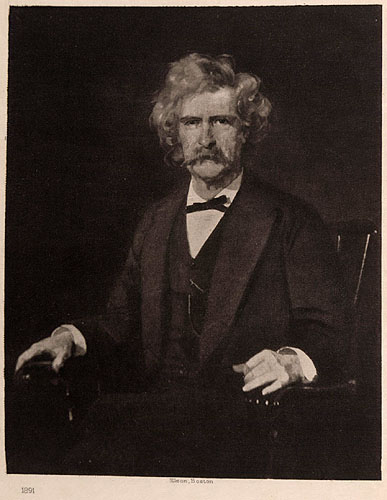

"Portrait 1891, from the Painting by Charles Noel Flagg":
Pudd'nhead Wilson
, "Édition de Luxe,"
The Writings of Mark Twain
Hartford: American Publishing Company, 1899.
The Clifton Waller Barrett Collection.